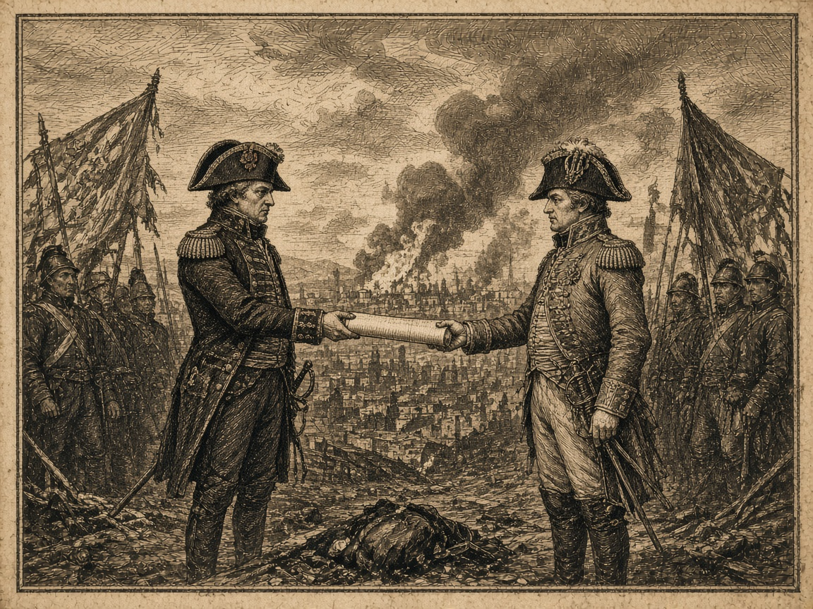
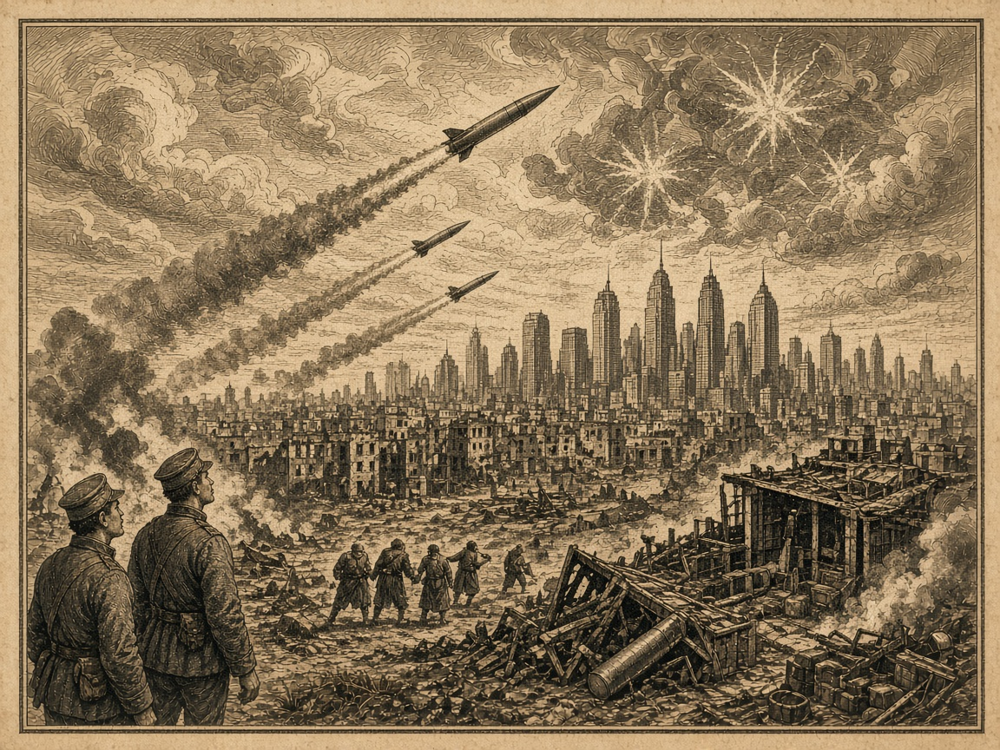

オリョルッルと泰平、開戦の週に停戦合意
フェルノア（46,45）にミサイル 人口9,500減 スルガ軍港はオリョルッル領に

【総合部】第207期、予告どおりオリョルッル王国と泰平天国の戦争が始まった。オリョルッルはフェルノア（46,45）へ弾道ミサイルを連射し、現代都市の人口が九千五百人減って千人残った。ミサイル基地二か所と兵站基地も壊滅した。同じ更新で両国は停戦合意し、戦争は終結した。停戦の知らせが前線へ届く前に発射命令が動いていたと、オリョルッル側は説明する。戦争開始と停戦成立、ミサイル攻撃が一つの更新に重なった。前線指揮官は「一発だけなら誤射である」と釈明したが、実際には複数の弾が発射され、現代都市と軍事施設に被害が出た。詳報は2面。

スルガ軍港占領 金野は精製所と兵站を取る
オリョルッルはスルガの軍港（81,27）を占領した。金野伯爵領は白波王国の精製所（66,16）と泰平の兵站基地（64,12）を占領。泰平はテキスタン共和国へ宣戦し、開戦を第212期とした。金野と青海、青海と翠湖は停戦合意。火災は十六件・六万四千五百人。画面は1.85。国特集は9面の青海共和国。